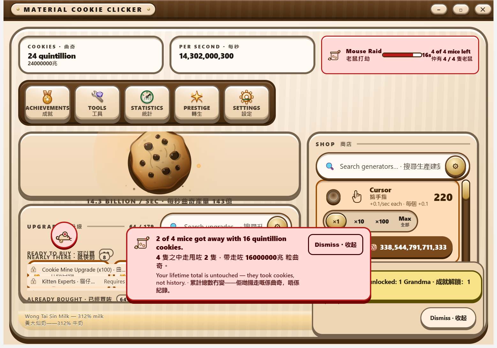

Random events
Sixteen events on a bounded random schedule — big frenzies, a Clot that halves production, a delivery chain, a two-button choice — plus a rare Mouse Raid on its own hourly clock that can take up to 80% of your cookies if you do not whack the mice. Photographed running.
Shipped the scheduler, all sixteen pool events and the Mouse Raid are in the build (src/shared/game/random-events.ts). Five of them — Cookie Rain, the Oven Hiccup, the Mouse Raid, a Production Frenzy and a Taste Test — have been photographed on the running game surface; the rest are described from their shipped definitions rather than from a picture, and this page says which is which.
From the running application
![The game surface during a Cookie Rain. Twelve round cookie buttons, each a dough-coloured disc with dark chocolate chunks and a chunky brown outline, are scattered across the stage at different heights, falling over the hero cookie panel and across the shop rail. In the top right of the HUD a yellow plate reads Cookie Rain in English and Cantonese with a draining amber bar and the figure 18s. A marquee at the bottom centre reads Cookie Rain: Cookies are falling. Catch them before they hit the counter, with the Cantonese line beneath it and a Dismiss button.](../assets/captures/events-rain.png)
![The same game surface during an Oven Hiccup. The HUD's fourth plate is now pink and outlined in red, reading Oven Hiccup in English and Cantonese with a draining dark red bar and the figure 27s. A pink chip sits at the top left of the stage over the hero panel, carrying an oven drawing with a warning bolt and the event's name in both languages. The marquee at the bottom reads Oven Hiccup: The oven is sulking and output is down. Thump it to fix it, with the Cantonese line and, in red, Production is down until this ends.](../assets/captures/events-indicator.png)
![The game surface during a Production Frenzy. The HUD's fourth plate is olive-green and ringed in gold, reading Production Frenzy in English and Cantonese beside a small oven drawing, with a draining amber bar and the figure 67s. The cookies plate reads 40 quintillion, per second reads 14,302,000,300 and per click reads 136.32. Below the plates a Raid Supplies shelf shows the three consumables at 0 of 3 each. The rest of the surface is the ordinary game: the hero cookie, the upgrades strip at 67 of 179, and the shop rail with Cursor at 220.](../assets/captures/frenzy-production.png)
FrenzyCapture, photographed with the Win32 PrintWindow API, window maximised, with the developer capture flag pinning the draw to this event — the event itself is the real one, at its real duration and its real arithmetic. One honest gap in this picture: the PER SECOND plate reads the base production figure and does not fold in the frenzy, and it does not fold in a golden cookie's frenzy either. That readout predates this work and is not something this lane changed; the cookies really do accrue at seven times the rate the plate shows.![The same game surface during a Taste Test. The fourth HUD plate is quiet and grey rather than gold, reading Taste Test in English and Cantonese with a draining bar and the figure 9s. Over the lower half of the stage sits a dark rounded card reading, in English and then Cantonese, A tray is out and it is borderline. Serve it now, or send it back for a better one? Below the question are two equally sized buttons: a brown one reading Serve it now, 4,290,600,089,997 cookies straight away, and an olive one reading Send it back, production times five for a minute, each with its Cantonese line. Under both, a smaller line reads Worth about the same either way. Let the clock run out and you get neither.](../assets/captures/frenzy-choice.png)
What it does
Every few minutes, one event out of a pool of sixteen interrupts an ordinary session. Most pay out, three cost you production for a while, one asks you a question with two buttons, and four of them put real buttons on the game stage that you can press. Only one event is ever running: there is no configuration under which two share the stage.
| Event | Class | What it does | Duration | Weight |
|---|---|---|---|---|
| Lucky Crumb | Boon | Ninety seconds of production plus a flat 25 cookies, paid at once | — | 12 |
| Cookie Rain | Boon | Twelve falling cookies; each one caught pays twenty seconds of production plus fifteen clicks’ worth | 20 seconds | 10 |
| Grandma’s Surprise Batch | Boon | Ten minutes of current production, paid at once | — | 10 |
| Market Day | Boon | 15% of every purchase handed back | 60 seconds | 10 |
| Sugar Rush | Frenzy | Click value ×7 | 15 seconds | 8 |
| Sprinkle Storm | Boon | Ten sprinkles; each one caught makes the next worth 30% more, so clearing the stage pays 23.5 sprinkles rather than ten | 18 seconds | 8 |
| Night Shift | Tradeoff | Production ×3 and click value ×0.25 — excellent if you put the mouse down, nearly worthless if you do not | 45 seconds | 7 |
| Delivery Rush | Chain | Three parcels that must be sent in order; each pays 45 seconds of production and finishing all three pays 180 more | 14 seconds | 6 |
| Oven Hiccup | Setback | Production drops to 40%; one press of the oven ends it early | 30 seconds | 6 |
| Taste Test | Choice | Two buttons: five minutes’ production now, or production ×5 for a minute. Answer neither and you get neither | 15 seconds | 5 |
| Production Frenzy | Frenzy | Production ×7 | 77 seconds | 4 |
| Flour Shortage | Setback | Production halved — then 45 seconds’ production lands in one lump when it ends, which is more than the dip cost | 30 seconds | 4 |
| Clot | Setback | Production halved. No button, no way to end it early — you wait it out | 66 seconds | 3 |
| Combo Window | Frenzy | Click value ×5, and every click pushes the window out by 0.4s, up to a hard ceiling of 30 seconds | 8–30 seconds | 3 |
| Click Frenzy | Frenzy | Click value ×777 | 13 seconds | 3 |
| Burnt Batch Frenzy | Frenzy | Production ×666 — the rarest thing in the pool, about one every fifteen hours of play | 6 seconds | 1 |
The three that cost you something, stated plainly
Thirteen draws in every hundred are an event that makes your counter climb more slowly, and this page is not going to bury them under the good ones. The Oven Hiccup drops production to 40% for thirty seconds and gives you a button that ends it immediately. The Flour Shortage halves production for thirty seconds and then pays forty-five seconds’ worth in one lump when it ends — you come out ahead, but for half a minute you really are producing less. The Clot halves production for sixty-six seconds and there is nothing at all you can do about it.
The Clot exists on purpose and it is the reason the frenzies are worth anything. A pool whose every face is a present is not weather, it is a drip feed, and you stop reading the marquee. None of the three touches your balance, your lifetime total or your click value — they slow production down and nothing else. The one thing in this game that can take cookies you already have is the Mouse Raid, below.
How the multipliers stack
There are exactly two sources of a live multiplier: a golden cookie’s frenzy, and whatever this pool is currently running. Only one pool event exists at a time, so the worst case is always one of each.
- They multiply. A Production Frenzy inside a golden frenzy is ×7 by ×7 = ×49. Two effects that arrived independently both apply; taking one away because the other landed would punish you for good luck.
- Penalties multiply too, and are never capped. A Clot during a golden frenzy is ×7 by 0.5 = ×3.5 — still a good minute, and visibly a worse one than it would have been.
- The upside is capped, at a stated ceiling. Combined production is capped at ×1000 and combined click value at ×10000. Those exist for one case each: a Burnt Batch Frenzy (×666) inside a golden frenzy would otherwise be ×4662. Both ceilings are far above anything a single event can reach alone, so hitting one always means two rare things coincided — the cap never quietly eats an ordinary buff.
- Sugar Rush is not special. It is a pool event like any other and goes through exactly the same rule.
The whole matrix is under test: every event against nothing, against a golden frenzy and against a golden click frenzy, including the two combinations that reach a ceiling and the ones that go the other way.
How often, and how that changed
The gap between two events is a flat one-minute cooldown plus a rolled delay. When the pool held six events that delay was three to ten minutes, which worked out at about eight events an hour. With sixteen events it is four to twelve minutes, which is about 6.7 an hour — nearly three times as many faces and fewer interruptions, because more variety is supposed to make each event rarer rather than make the session busier. At that rate a Production Frenzy lands about once every 3.7 hours, a Click Frenzy about once every five, and a Burnt Batch Frenzy about once every fifteen.
The draw is weighted, not uniform, and the weights above are literally the numbers in the code — they sum to exactly one hundred, which a test pins down, so a weight reads as a percentage without any arithmetic. A long seeded run asserts each event really is drawn at its stated rate.
The Mouse Raid
Roughly once an hour, mice get onto the counter. Three to five of them scurry across the game stage for twenty seconds, each one a real button you can whack. Every mouse still loose when the twenty seconds are up carries cookies away with it, and if all of them get away the raid takes eighty per cent of your current balance. Whack every one and it takes nothing at all, and pays you a small bonus for the trouble.
![The game surface during a Mouse Raid. Five round pink buttons, each carrying a small grey mouse with a red ear, a red nose, whiskers and a cookie crumb under its belly, are scattered across the lower half of the stage, running over the upgrade shelf and the shop rail. The fourth HUD plate is pink and outlined in red, reading Mouse Raid in English and Cantonese with a draining dark red bar, the figure 10s, and the line 5 of 5 mice left with its Cantonese equivalent. The cookies plate reads 320 quadrillion.](../assets/captures/mice-raid.png)

What it takes, exactly
The theft is balance × 0.8 × escaped / total, so one mouse of five getting away costs sixteen per cent and all five cost the full eighty. It is scaled rather than all-or-nothing on purpose: a raid you nearly stopped should cost you nearly nothing, and whacking four of five visibly buys back four fifths of your balance.
| Mice that escaped | Share of your balance taken |
|---|---|
| 0 — all whacked | Nothing, plus a defended bonus of two minutes’ production and 250 cookies |
| 1 of 5 | 16% |
| 2 of 5 | 32% |
| 3 of 5 | 48% |
| 4 of 5 | 64% |
| 5 of 5 | 80% — the ceiling, and the most a raid can ever take |
It takes cookies, not history. The theft comes off your balance and never off your lifetime total or your baked-cookies statistic. Those two are the record of what this save has ever produced; they gate achievements and the prestige projection, and a mouse eating a biscuit does not un-bake it. Letting a raid rewind them would make it quietly retroactive — revoking achievements and ascension points hours after the fact — which is a far worse punishment than the one you agreed to. So a raid is expensive and it is survivable, and nothing it does can move a number that only ever goes up.
Fat mice, and hit points
Most mice go down to a single whack. Raids of four or five bring one fat mouse, which takes two or three hits and carries double an ordinary mouse’s share of the theft — so a raid of four ordinary mice plus a fat one splits into six shares, and the fat one getting away on its own costs a third of the ceiling rather than a fifth of it. The head count you see in the aftermath card still counts heads, because that is what you watched happen; the split underneath is by share, and this is where that is written down.
A fat mouse is drawn larger and carries a row of pips showing how many hits it has left, and its accessible name says the same thing in words.
Raid supplies
Three consumables, bought with cookies, by hand, one at a time, from a stock that is capped at three each. They are insurance, not immunity, and a save that never buys one plays exactly the game that shipped before them. Each is priced from a base that multiplies by four for every one you have ever bought, so spending your stock does not reset the price.
| Item | What it does | When it is spent |
|---|---|---|
| Whack Pass · 打鼠券 | The raid takes nothing. The mice that got away leave empty-handed. | Only at the moment a raid would actually take cookies |
| Bigger Whack · 大力拍 | One press swats every mouse within reach of it, overlapping mice included | Armed when a raid starts; spent by that raid |
| Half-HP Whack · 半血拍 | Every mouse in that raid needs half as many hits, rounded up | Armed when a raid starts; spent by that raid |
A pass is not a defence, and the game does not pretend it is. Whacking every mouse yourself pays the defended bonus and spends no pass — a pass in the drawer is never wasted on a raid you were going to win. When a pass is spent, the aftermath card says so in as many words (“A Whack Pass was spent”) and the announcement says it too, rather than congratulating you on mice you never touched.
The two whack consumables arm themselves at the start of a raid if you have them in stock. That is deliberate: an “arm this now?” prompt in the middle of a twenty-second window would be a worse game and a much worse experience for anyone who needs a moment to read it. They are spent by that raid whatever happens, because what they buy is a raid that is easier to fight, and you got one. Stock is a plain count rather than a list of individual items, so there is no oldest pass to spend first — there is nothing to sort.
Where the reach of a Bigger Whack ends is arithmetic, and it lives in the domain with the rest of the arithmetic: the interface measures where the mice actually are (they are animated, so the layout is the only honest source for that) and a tested pure function decides which of them one swing caught. The domain then checks independently that the raid had a Bigger Whack armed at all, so a swing can never clear a stage it did not pay for.
Rarity, and the rails around it
- Its own clock, not the pool’s. The raid is never drawn from the weighted bag the other sixteen events come from. It runs on a separate thirty-to-sixty-minute window — rare by the clock rather than rare by the dice — because an eighty-per-cent loss sharing a bag with Lucky Crumb would be either too light to be a raid or too frequent to be fair.
- Unpredictable inside that window. The gap is drawn uniformly across the whole half-hour band, so at any moment the best guess available is “some time in the next half hour” and no mental clock does better. Nothing in the interface tells you more: there is no countdown, no warning and no readable state before a raid lands — the HUD plate and the mice appear together, at the moment it starts. And the session’s randomness is seeded from real entropy at start-up rather than from a constant, so no two installations share a timeline and a schedule worked out once is a schedule for nobody. Reloading cannot dodge a raid either: the instant the next one is due is saved as a wall-clock time and reloading does not move it.
- Still one event at a time. It occupies the same single active slot as everything else here, so it can never land on top of a Cookie Rain, and a golden cookie waiting to be clicked still blocks it.
- Never in a fresh save’s first ten minutes. The opening minutes are the tutorial by another name, and a raid there teaches the wrong lesson.
- Never below a thousand cookies. Eighty per cent of four hundred cookies is not a robbery, it is noise, and it is noise aimed at exactly the player least able to read a new mechanic. The raid waits rather than re-rolling.
- Never against a window you are not looking at. Nothing about the game clock pauses when the window is hidden — cookies keep accruing exactly as they do while the app is closed, which is what the offline-progress rules already promise — but a raid will not start against a hidden or minimised window. It fires on the first tick after you come back, so the twenty seconds you get are twenty seconds you could actually see.
Unpredictable in play, deterministic in the lab: the scheduler takes its randomness through an injected port, so a test supplies a seed and replays a timeline exactly while the application supplies entropy. The suite drives forty-eight hours of simulated play and asserts that the gaps really do spread across the band rather than clustering on one interval, that every rolled delay lands inside the advertised thirty-to-sixty minutes, that two independently seeded sessions produce different timelines, that no raid ever began inside an exclusion, and that the theft arithmetic is exact for every escaped-mouse count.
The scheduling rules, stated plainly
- One at a time, ever. While an event is running, no roll happens at all. There is no configuration under which two events share the stage.
- Never over a golden cookie. The golden cookie is a separate system with its own window, but it lands on the same surface, so the event scheduler declines to roll while one is waiting to be clicked.
- A cooldown, then a window. When an event resolves, a flat quiet minute starts, and only then does a rolled delay of four to twelve minutes begin. Whatever the dice say, there is always at least a minute of ordinary play between two events.
- Ending it early ends it properly. Catching the last rain drop or sprinkle, sending the last parcel, thumping the oven, or serving the tray in a Taste Test resolves the event there and then and starts the same cooldown. The reward for answering an event is getting your session back, not a shorter wait for the next one.
Seeded, not random
Like the golden cookie, this scheduler never calls Math.random(). Every roll — when the next event is eligible, which event it is — comes from an injected pseudo-random port whose stream position is saved with the game, so a save-and-reload resumes the same timeline instead of re-rolling your luck. Given the same seed, the whole sequence replays exactly, which is what makes the tests able to drive six hours of simulated play and assert that no two events ever overlapped and no gap was ever shorter than the cooldown.
Time is an argument too. No part of this module reads a clock; the elapsed milliseconds arrive from the same tick the cookies-per-second loop already runs on.
Why Market Day is a rebate and not a discount
Every price in the game is computed in exactly one place, and the Tools tech tree already applies a discount at that seam. Threading a second, timed discount through the same arithmetic would mean the price printed on a shop card and the price actually charged disagreed for sixty seconds at a time. So Market Day does not touch pricing at all: you pay the printed price, and the reducer hands fifteen per cent of it straight back afterwards. The shop stays honest and the effect stays real.
Accessibility
Every clickable event target is a real button with a real accessible name and a hit area comfortably over 44 pixels — never a decorated container with a click handler on it. Each event is announced once, in both languages, through the same throttled status region that already announces achievements and purchases; the marquee on screen is a duplicate of that announcement and is hidden from assistive technology so nothing is said twice.
The Taste Test is two ordinary focusable buttons in a card with a name on it; each button’s accessible name states what it pays, including the literal figure on the lump-sum one, and the note under them says outright that letting the clock run out gives you neither. In a Delivery Rush the two parcels that are not next are real buttons carrying disabled, dimmed rather than hidden, and their accessible names say “not this one yet” — a disabled control that explains itself beats an enabled one that silently does nothing.
Under a reduced-motion preference the rain stops moving and becomes twelve still crumbs laid down the same stage, in the same columns, at the same size, worth exactly the same cookies; the sprinkles stop bobbing and stay exactly where they were, at the same 46-pixel size and the same escalating value; the live parcel stops nudging and is marked by its colour and its enabled state alone; the frenzy plate keeps its gold ring and stops pulsing; and the oven chip stops shaking. Nothing becomes unreachable and nothing becomes harder to hit; the only thing that goes away is the motion. No event gates anything: the worst one costs production for thirty seconds and hands you a button to end it sooner.
How it is configured
The spawn window, the cooldown and every payout are fields of one configuration object with a documented default set, not constants buried in the scheduler. Deliberately developer-only configurations exist for capture and smoke runs: one shortens the window to a few seconds, one shortens the raid’s hour instead, and one pins the draw to a single named event so that a 1%-weight frenzy can be photographed honestly rather than waited fifteen hours for. All three are reached by setting a single local-storage key before the game starts and by nothing else, and none of them relaxes a rule the player is subject to — the event that fires is the real event, with its real duration and its real arithmetic. There is no button, no settings row and no in-game control that summons an event, because a random event you can summon is not a random event.